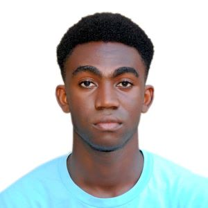

Home
About me
My name is William Nyemasem Osiakwan. I come from Ghana and live in the city of Accra. I am a member of The Church Of Jesus Christ Of Latter Day Saints and a returned missionary. I served my mission in the Nigeria Calabar/Uyo mission from 2018-2020. I had lots of experinces on my missionary service. I am a student of Brigham Young University-Idaho and I am currently learning Frontend Development with the goal of becoming a professional Frontend Developer. I am excited about the opportunities that this course will provide and look forward to learning new skills and techniques in web development.
Student Photo

Web Certification Course
WDD130
WDD131
WDD231
The total number of course listed above is 6